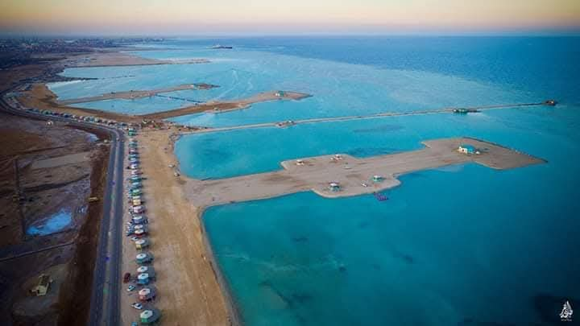
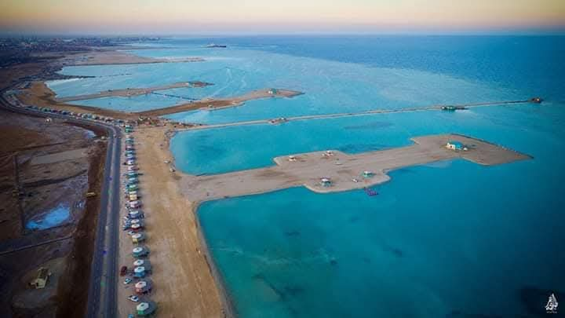

1. Tourism at Al-Kilo Beach
Al-Kilo Beach is a popular destination in Port Sudan, blending stunning coastal nature with recreational services.
Tourist Activities:
Diving and Snorkeling: Explore coral reefs and marine life.
Boat Rides: Enjoy scenic sea trips.
Swimming and Relaxation: Unwind on the soft white sands.
Barbecues and Family Gatherings: Host memorable events by the beach.
Tourist Services:
Wooden huts and umbrellas for comfort.
Restaurants and cafes offering fresh seafood.
Facilities for renting diving and snorkeling equipment
Al-Kilo Beach is a popular destination in Port Sudan, blending stunning coastal nature with recreational services.
Tourist Activities:
Diving and Snorkeling: Explore coral reefs and marine life.
Boat Rides: Enjoy scenic sea trips.
Swimming and Relaxation: Unwind on the soft white sands.
Barbecues and Family Gatherings: Host memorable events by the beach.
Tourist Services:
Wooden huts and umbrellas for comfort.
Restaurants and cafes offering fresh seafood.
Facilities for renting diving and snorkeling equipment
2. Location of Al-Kilo Beach
The beach is conveniently located near downtown Port Sudan, making it easily accessible.
It overlooks the Red Sea, famous for its crystal-clear waters and diverse coral reefs.
The beach is conveniently located near downtown Port Sudan, making it easily accessible.
It overlooks the Red Sea, famous for its crystal-clear waters and diverse coral reefs.
3. Historical Significance
Al-Kilo Beach is one of the region’s standout destinations, reflecting
the unique natural beauty of the Red Sea and symbolizing the area's marine heritage.
Al-Kilo Beach is one of the region’s standout destinations, reflecting
the unique natural beauty of the Red Sea and symbolizing the area's marine heritage.
4. Tips for Visitors
The best time to visit is during winter (November to February)
when the weather is mild and ideal for marine activities.
Bring cameras to capture the breathtaking natural beauty and coral reefs.
Take full advantage of the beach services, such as renting equipment or enjoying fresh seafood.
The best time to visit is during winter (November to February)
when the weather is mild and ideal for marine activities.
Bring cameras to capture the breathtaking natural beauty and coral reefs.
Take full advantage of the beach services, such as renting equipment or enjoying fresh seafood.
معرض الصور

 
